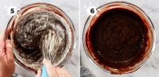
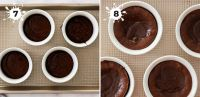
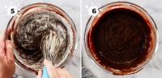
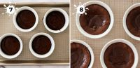

Suklaafondant on täydellinen jälkiruoka, kun haluat hemmotella itseäsi ja vieraitasi. Tämä resepti takaa täydellisen pehmeän sisuksen!
Ainekset
- 125 g voita
- 1 dl fariinisokeria
- 1 dl sokeria
- 1 muna
- 2 dl vehnäjauhoja
- ½ tl ruokasoodaa
- ½ tl suolaa
- 150 g suklaarouhetta
Valmistusohjeet
1- Vatkaa voi ja sokerit vaahdoksi. Lisää muna ja sekoita hyvin.
2- Sekoita kuivat aineet keskenään ja lisää taikinaan.
3- Lisää suklaarouhe ja sekoita.
4- Nostele taikinasta nokareita pellille ja paista 175°C noin 10–12 minuuttia.
Vaiheittaiset kuvat
 


